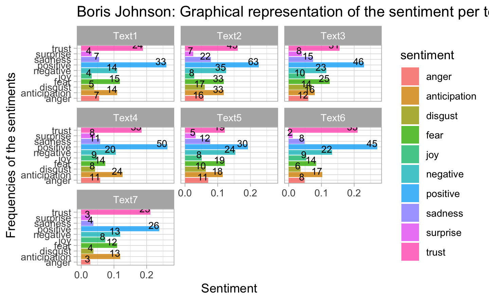
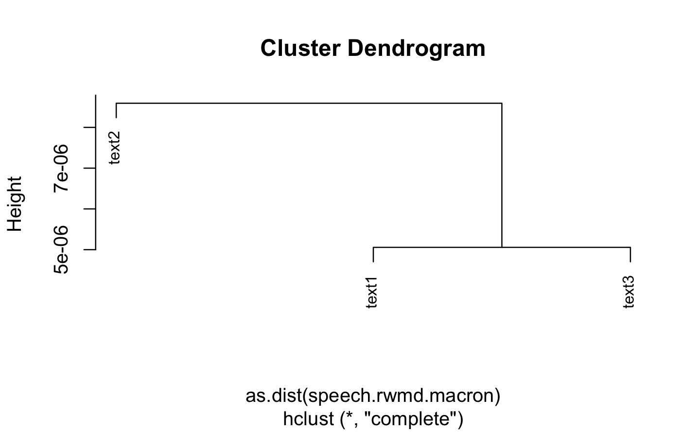

Chapter 5 Topic Modelling
In this chapter, we analzye the topics of the speechs of Boris Jonhson and Macron using LSA and LDA.
5.1 Boris Johnson
5.1.1 LSA
First, we make the DTM matrix. We are goin to use 3 dimensions.
To inspect the results, we can extract the matrices involved in the LSA decomposition
| text1 | -0.175 | 0.053 | -0.148 |
| text2 | -0.519 | 0.052 | -0.813 |
| text3 | -0.358 | -0.737 | 0.101 |
| text4 | -0.525 | 0.626 | 0.342 |
| text5 | -0.299 | -0.210 | 0.314 |
| text6 | -0.356 | -0.121 | 0.226 |
| morning | -0.002 | 0.002 | -0.005 |
| government’s | -0.011 | 0.005 | -0.039 |
| cobr | -0.007 | -0.023 | -0.002 |
| emergency | -0.030 | -0.050 | -0.011 |
| committee | -0.009 | 0.004 | -0.034 |
| coronavirus | -0.047 | 0.015 | -0.026 |
Often the first dimension in LSA is associated with the document lenght. To see if it is true, we build a scatter-plot between the document lengt and Dimension 1.
 We clearly observe that the dimension 1 is negatively correlated with the document lenght.
We clearly observe that the dimension 1 is negatively correlated with the document lenght.
Now in order to make the link between the topics and the documents and the topics with term, we use biplot
biplot(y=bmod$docs[,2:3],x=bmod$features[,2:3],
col=c("grey","red"),
xlab = "Dimension 2",
ylab="Dimension 3")
We repeat the same analysis with TF-IDF
| text1 | -0.147 | -0.063 | -0.318 |
| text2 | -0.380 | -0.187 | -0.752 |
| text3 | -0.444 | -0.750 | 0.463 |
| text4 | -0.735 | 0.615 | 0.256 |
| text5 | -0.180 | -0.132 | -0.173 |
| text6 | -0.200 | -0.040 | -0.153 |
| morning | -0.008 | -0.004 | -0.025 |
| government’s | -0.024 | -0.014 | -0.070 |
| cobr | -0.021 | -0.037 | 0.007 |
| emergency | -0.042 | -0.038 | 0.013 |
| committee | -0.019 | -0.011 | -0.054 |
| coronavirus | -0.016 | -0.001 | -0.011 |
5.1.2 LDA
We now turn to the LDA. For illustration, we will make K=5 topis.
K<-5
corpus_boris.dtm<- convert(corpus_boris.dfm, to="topicmodels")
lda_boris<- LDA(corpus_boris.dtm ,k=K)Top terms per topic and top topic per document can be easily obtained. Belo, the six top terms and the top topic are extracted.
| Topic 1 | Topic 2 | Topic 3 | Topic 4 | Topic 5 |
|---|---|---|---|---|
| will | will | will | now | will |
| go | much | school | people | want |
| can | can | need | go | thank |
| people | disease | make | say | much |
| now | now | keep | need | measure |
| know | spread | want | can | everyone |
topics(lda_boris,1) ## To see the topics related to each document
#> text1 text2 text3 text4 text5 text6 text7
#> 2 2 4 3 1 1 5We now build the bar plot to inspect the per-topic-per-word probabilities (beta’s). We take the 10 top terms and rearrange the beta per topic according to this order.
beta.td.boris<-tidy(lda_boris,matrix="beta")
beta.top.term.boris<-beta.td.boris %>%
group_by(topic) %>%
top_n(10, beta) %>%
ungroup() %>%
arrange(topic, -beta)
beta.top.term.boris| topic | term | beta |
|---|---|---|
| 1 | will | 0.028 |
| 1 | go | 0.019 |
| 1 | can | 0.017 |
| 1 | people | 0.014 |
| 1 | now | 0.013 |
| 1 | know | 0.013 |
| 1 | want | 0.012 |
| 1 | get | 0.012 |
| 1 | day | 0.012 |
| 1 | disease | 0.010 |
| 1 | take | 0.010 |
| 1 | say | 0.010 |
| 1 | already | 0.010 |
| 2 | will | 0.039 |
| 2 | much | 0.022 |
| 2 | can | 0.017 |
| 2 | disease | 0.014 |
| 2 | now | 0.013 |
| 2 | spread | 0.013 |
| 2 | people | 0.012 |
| 2 | week | 0.012 |
| 2 | thing | 0.010 |
| 2 | time | 0.010 |
| 2 | good | 0.010 |
| 3 | will | 0.039 |
| 3 | school | 0.022 |
| 3 | need | 0.017 |
| 3 | make | 0.017 |
| 3 | keep | 0.017 |
| 3 | want | 0.015 |
| 3 | go | 0.015 |
| 3 | child | 0.015 |
| 3 | also | 0.011 |
| 3 | spread | 0.011 |
| 3 | far | 0.011 |
| 3 | already | 0.011 |
| 4 | now | 0.027 |
| 4 | people | 0.014 |
| 4 | go | 0.014 |
| 4 | say | 0.014 |
| 4 | need | 0.014 |
| 4 | can | 0.012 |
| 4 | ask | 0.012 |
| 4 | much | 0.012 |
| 4 | contact | 0.012 |
| 4 | disease | 0.010 |
| 4 | week | 0.010 |
| 4 | social | 0.010 |
| 4 | day | 0.010 |
| 4 | gathering | 0.010 |
| 5 | will | 0.031 |
| 5 | want | 0.022 |
| 5 | thank | 0.022 |
| 5 | much | 0.022 |
| 5 | measure | 0.022 |
| 5 | everyone | 0.019 |
| 5 | business | 0.016 |
| 5 | follow | 0.016 |
| 5 | slow | 0.013 |
| 5 | spread | 0.013 |
| 5 | advice | 0.013 |
| 5 | today | 0.013 |
| 5 | take | 0.013 |
| 5 | set | 0.013 |
| 5 | people | 0.013 |
| 5 | say | 0.013 |
| 5 | life | 0.013 |
beta.top.term.boris %>%
mutate(term=reorder_within(term, beta, topic)) %>%
ggplot(aes(term,beta,fill=factor(topic))) +
facet_wrap(~topic, scales = "free") +
coord_flip()+
scale_x_reordered()| document | topic | gamma |
|---|---|---|
| text1 | 1 | 0 |
| text2 | 1 | 0 |
| text3 | 1 | 0 |
| text4 | 1 | 0 |
| text5 | 1 | 1 |
| text6 | 1 | 1 |
| text7 | 1 | 0 |
| text1 | 2 | 1 |
| text2 | 2 | 1 |
| text3 | 2 | 0 |
| text4 | 2 | 0 |
| text5 | 2 | 0 |
| text6 | 2 | 0 |
| text7 | 2 | 0 |
| text1 | 3 | 0 |
| text2 | 3 | 0 |
| text3 | 3 | 0 |
| text4 | 3 | 1 |
| text5 | 3 | 0 |
| text6 | 3 | 0 |
| text7 | 3 | 0 |
| text1 | 4 | 0 |
| text2 | 4 | 0 |
| text3 | 4 | 1 |
| text4 | 4 | 0 |
| text5 | 4 | 0 |
| text6 | 4 | 0 |
| text7 | 4 | 0 |
| text1 | 5 | 0 |
| text2 | 5 | 0 |
| text3 | 5 | 0 |
| text4 | 5 | 0 |
| text5 | 5 | 0 |
| text6 | 5 | 0 |
| text7 | 5 | 1 |
gamma.td.boris %>%
ggplot(aes(document,gamma,fill=factor(topic))) +
geom_col(show.legend = FALSE) +
facet_wrap(~topic,scales = "free")+
coord_flip()+
scale_x_reordered()
5.2 Macron
5.2.1 LSA
To inspect the results, we can extract the matrices involved in the LSA decomposition
| text1 | -0.666 | 0.502 | 0.552 |
| text2 | -0.426 | 0.351 | -0.834 |
| text3 | -0.612 | -0.791 | -0.020 |
| france | -0.080 | 0.032 | 0.009 |
| dear | -0.054 | 0.016 | -0.022 |
| past | -0.023 | -0.017 | 0.037 |
| country | -0.075 | -0.107 | -0.071 |
| spread | -0.049 | 0.077 | 0.024 |
| virus | -0.101 | -0.015 | 0.085 |
Often the first dimension in LSA is associated with the document lenght. To see if it is true, we build a scatter-plot between the document lengt and Dimension 1.
We clearly observe that the dimension 1 is negatively correlated with the document lenght.
Now in order to make the link between the topics and the documents and the topics with term, we use biplot
biplot(y=mmod$docs[,2:3],x=mmod$features[,2:3],
col=c("grey","red"),
xlab = "Dimension 2",
ylab="Dimension 3")We repeat the same analysis with TF-IDF
| text1 | -0.244 | 0.921 | 0.304 |
| text2 | -0.107 | 0.286 | -0.952 |
| text3 | -0.964 | -0.265 | 0.028 |
| france | 0.000 | 0.000 | 0.000 |
| dear | 0.000 | 0.000 | 0.000 |
| past | -0.042 | 0.028 | 0.016 |
| country | 0.000 | 0.000 | 0.000 |
| spread | 0.000 | 0.000 | 0.000 |
| virus | 0.000 | 0.000 | 0.000 |
5.2.2 LDA
We now turn to the LDA. For illustration, we will make K=5 topis.
K<-5
corpus_macron.dtm<- convert(corpus_macron.dfm, to="topicmodels")
lda_macron<- LDA(corpus_macron.dtm ,k=K)
lda_macron
#> A LDA_VEM topic model with 5 topics.Top terms per topic and top topic per document can be easily obtained. Belo, the six top terms and the top topic are extracted.
| Topic 1 | Topic 2 | Topic 3 | Topic 4 | Topic 5 |
|---|---|---|---|---|
| will | will | will | will | will |
| much | know | much | also | must |
| continue | even | take | must | virus |
| government | much | also | much | may |
| week | now | even | day | come |
| able | work | health | us | can |
We now build the bar plot to inspect the per-topic-per-word probabilities (beta’s). We take the 10 top terms and rearrange the beta per topic according to this order.
beta.td.macron<-tidy(lda_macron,matrix="beta")
beta.top.term.macron<-beta.td.macron %>%
group_by(topic) %>%
top_n(10, beta) %>%
ungroup() %>%
arrange(topic, -beta)
beta.top.term.macron| topic | term | beta |
|---|---|---|
| 1 | will | 0.021 |
| 1 | much | 0.018 |
| 1 | continue | 0.011 |
| 1 | government | 0.010 |
| 1 | week | 0.010 |
| 1 | able | 0.009 |
| 1 | us | 0.009 |
| 1 | country | 0.009 |
| 1 | can | 0.008 |
| 1 | work | 0.007 |
| 2 | will | 0.038 |
| 2 | know | 0.018 |
| 2 | even | 0.016 |
| 2 | much | 0.014 |
| 2 | now | 0.013 |
| 2 | work | 0.013 |
| 2 | vulnerable | 0.012 |
| 2 | care | 0.012 |
| 2 | action | 0.012 |
| 2 | also | 0.012 |
| 3 | will | 0.040 |
| 3 | much | 0.015 |
| 3 | take | 0.013 |
| 3 | also | 0.012 |
| 3 | even | 0.009 |
| 3 | health | 0.009 |
| 3 | protect | 0.009 |
| 3 | virus | 0.009 |
| 3 | time | 0.008 |
| 3 | make | 0.008 |
| 4 | will | 0.029 |
| 4 | also | 0.016 |
| 4 | must | 0.014 |
| 4 | much | 0.011 |
| 4 | day | 0.009 |
| 4 | us | 0.008 |
| 4 | protect | 0.008 |
| 4 | one | 0.008 |
| 4 | even | 0.008 |
| 4 | go | 0.007 |
| 5 | will | 0.079 |
| 5 | must | 0.016 |
| 5 | virus | 0.016 |
| 5 | may | 0.015 |
| 5 | come | 0.013 |
| 5 | can | 0.012 |
| 5 | rule | 0.012 |
| 5 | day | 0.012 |
| 5 | many | 0.012 |
| 5 | help | 0.011 |
beta.top.term.macron %>%
mutate(term=reorder_within(term, beta, topic)) %>%
ggplot(aes(term,beta,fill=factor(topic))) +
facet_wrap(~topic, scales = "free") +
coord_flip()+
scale_x_reordered()
| document | topic | gamma |
|---|---|---|
| text1 | 1 | 0.000 |
| text2 | 1 | 0.000 |
| text3 | 1 | 0.638 |
| text1 | 2 | 0.185 |
| text2 | 2 | 0.000 |
| text3 | 2 | 0.000 |
| text1 | 3 | 0.815 |
| text2 | 3 | 0.000 |
| text3 | 3 | 0.000 |
| text1 | 4 | 0.000 |
| text2 | 4 | 1.000 |
| text3 | 4 | 0.000 |
| text1 | 5 | 0.000 |
| text2 | 5 | 0.000 |
| text3 | 5 | 0.362 |
gamma.td.macron %>%
ggplot(aes(document,gamma,fill=factor(topic))) +
geom_col(show.legend = FALSE) +
facet_wrap(~topic,scales = "free")+
coord_flip()+
scale_x_reordered()